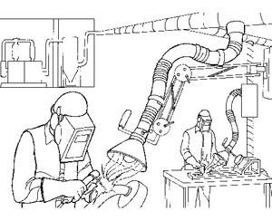
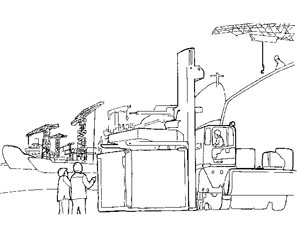
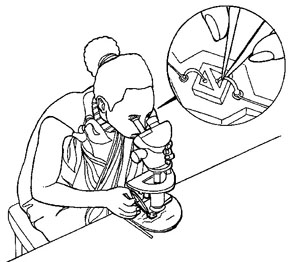
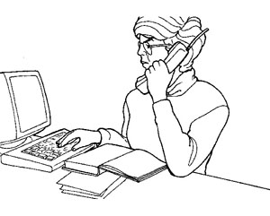
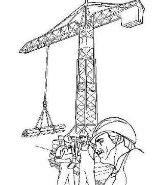

Exercise. Identifying hazards in the workplace
Note:
For this exercise, three to five students can work together. Use the Mail to communicate with each other if you not attending class.
The pictures below show different workplaces where a variety of hazards can be found. Look at the pictures and imagine what sort of problems might exist in each workplace. Some of the major hazards associated with each of these jobs are given below.
Discuss the hazards that may be associated with these jobs in your group
and prepare a draft Job Safety Analysis (JSA) for two (2) of the workplaces shown below.
|  |
1. Welder — A welder can be burnt from the sparks and there is always the danger of the work process starting a fire. There is the problem of the intense light which can cause permanent eye damage as well as the fumes given off by the process which can damage the lungs. |
|  |
2. Port worker - Again hazards depend largely on the nature of the job and in particular the cargo being handled. Port workers often have no idea of the dangerous nature of the cargo; there may be a sign on the side of a box or drum, but the information may not be in their language or in words that make much sense to the average worker. The condition of the cargo is also important as leaking drums or split bags can be very hazardous for the handlers. Other risks include falls, cuts, back and other musculoskeletal problems as well as collisions with fast moving vehicles such as fork-lift trucks or delivery trucks. |
|  |
3. Electronics assembly worker - An electronics assembly worker can suffer eye problems from doing close work, often in poor light. Because such workers sit still for long periods with inadequate seating, they can also suffer from back and other musculoskeletal problems. For some workers there are the dangers of solder fumes or solder “flecks” in the eye when the excess solder is cut off with pliers. |
|  |
4. Office worker - Many people may think that office workers have no health and safety problems; this is far from true. Stress is one of the most common complaints, as well as exposure to chemical hazards from office machines such as photocopiers. Poor lighting, noise and poorly designed chairs and stools can also present problems. |
|  |
5. Construction worker - Construction workers face a variety of hazards, particularly safety problems such as falls, slips, trips, cuts, and being hit by falling objects. There are also dangers from working high up, often without adequate safety equipment, musculoskeletal problems from lifting heavy objects, as well as the hazards associated with exposure to noisy machinery. |
|